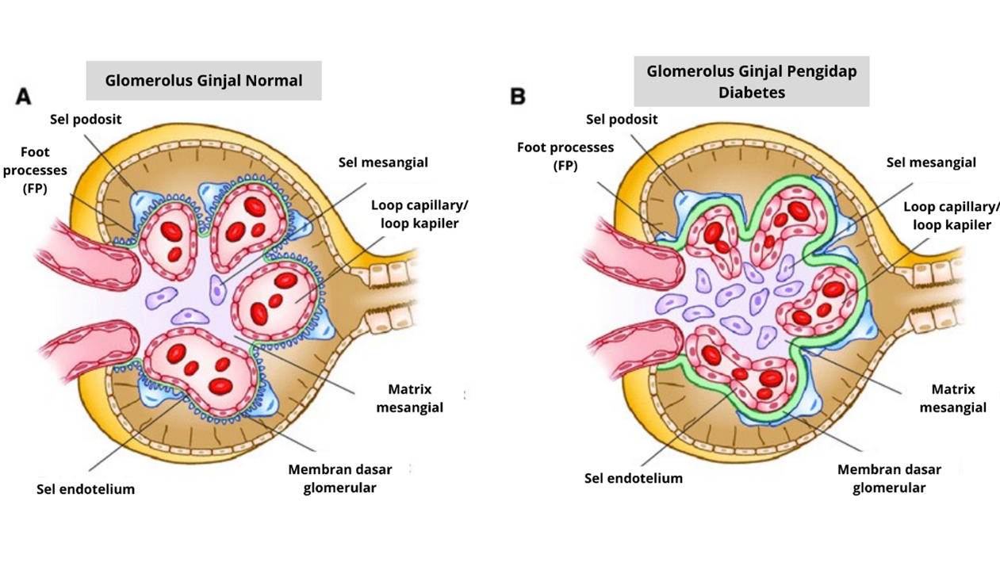
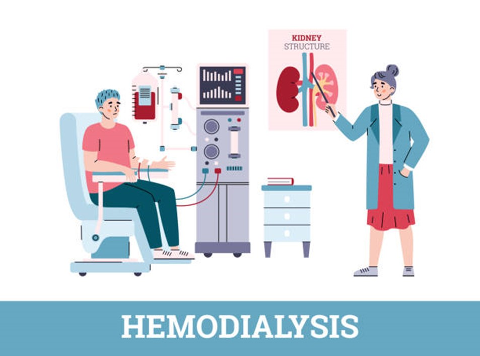
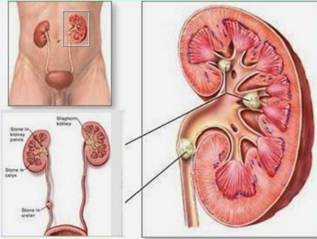
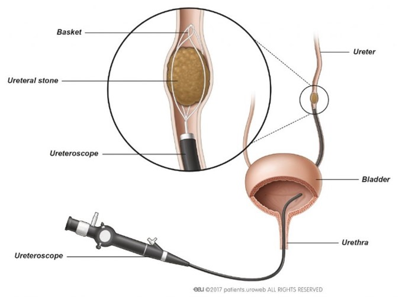

Sebagai salah satu organ ekskresi yang bersifat vital bagi tubuh, ginjal juga rentan akan beberapa gangguan/ terjadinya kelainan struktur yang membuat munculnya penyakit tertentu. Mayoritas penyebab dari beberapa penyakit tersebut
ialah pola hidup yang tidak sehat, meliputi pola konsumsi makanan dan minuman yang berlebihan kandungan gula serta tidak cukup berolahraga. Berikut beberapa kelainan pada ginjal sebagai sistem ekskresi yakni:
A. Gagal Ginjal
Gagal ginjal ialah kondisi dimana salah satu ginjal tidak menjalankan fungsinya sebagaimana mestinya atau bahkan tidak berfungsi sama sekali. Penyakit gagal ginjal masih menjadi 1 dari 4 penyakit tidak menular prioritas menurut
laporan Riset Kesehatan Dasar tahun 2018 yang dilakukan Kementerian Kesehatan Republik Indonesia. Penyakit ini mayoritas disebabkan oleh kelainan struktur ginjal, terutama pada nefron ginjal, yaitu bagian glomerulus yang memerankan
peran vital dalam proses filtrasi darah.
Penyebab
Tercatat ada dua penyebab yang seringkali ditemukan menjadi penyebab penyakit gagal ginjal, yaitu hipertensi dan diabetes melitus (DM). Hipertensi sendiri dapat menjadi penyebab sekaligus akibat yang ditimbulkan dari penyakit
gagal ginjal, dimana tekanan darah yang tinggi diketahui dapat merusak pembuluh kapiler glomerulus yang berujung menyebabkan penyakit gagal ginjal (Kemenkes, 2018). Diabetes melitus disebabkan karena kadar gula darah
yang tinggi dalam waktu yang lama dapat menyebabkan kerusakan pada pembuluh darah di seluruh tubuh, termasuk di ginjal. Gagal ginjal akibat diabetes ini disebut sebagai nefropati diabetik, dan bisa menyebabkan kerusakan
pada fungsi ginjal.

Gambar 1. Perbandingan gambar glomerulus pada ginjal orang normal dan ginjal pengidap diabetes melitus Sumber: Alicic 2017
Gambar 1 menunjukkan kondisi morfologi ginjal normal dan perubahan struktural pada penderita diabetes melitus. Penyakit ginjal akibat diabetes menginduksi perubahan struktural, termasuk penebalan membran dasar glomerulus.
penebalan membran basal glomerulus akan menyebabkan terjadinya hiperfiltrasi-hiperfusi membran basal glomeruli dan secara bertahap akan meningkatkan kadar albumin dalam urin (mikroalbuminuria). Mikroalbuminuria yang
menetap merupakan penanda terjadinya tahap awal menurunnya fungsi ginjal pada pasien DM dengan nefropati.
Prevalensi Pengidap gagal ginjal
Gagal ginjal telah menjadi masalah medis di seluruh dunia yang menyebabkan angka kematian cukup tinggi. Gagal ginjal kronik adalah cedera ginjal progresif dan mematikan yang mengganggu kekuatan ginjal untuk menjaga metabolisme,
proporsi air, elektrolit, dan limbah nitrogen. Prevalensi penyakit ginjal kronis menjelaskan bahwa gagal ginjal kronik adalah masalah kesehatan dengan perbandingan 1:10 penduduk dunia diidentikkan dengan penyakit ginjal
kronis dan diperkirakan 5 sampai 10 juta kematian pasien setiap tahun, dan diperkirakan 1,7 juta kematian setiap tahun karena kerusakan ginjal akut (WHO, 2018). Prevalensi gagal ginjal pada laki-laki (0,3%) lebih tinggi
dibandingkan dengan perempuan (0,2%). Berdasarkan karakteristik umur prevalensi tertinggi pada kategori usia di atas 75 tahun (0,6%), dimana mulai terjadi peningkatan pada usia 35 tahun ke atas. (Kemenkes, 2019)
Diabetes merupakan salah satu pemicu penyakit gagal ginjal yang seringkali ditemukan kasusnya. Gagal ginjal akibat diabetes ini disebut sebagai nefropati diabetic. Menurut data dari Institude for Health Metrics and Evaluation
bahwa diabetes merupakan penyakit penyebab kematian tertinggi ke 3 di Indonesia tahun 2019 yaitu sekitar 57,42 kematian per 100.000 penduduk. Data International Diabetes Federation (IDF) mendapati bahwa jumlah penderita
diabetes pada 2021 di Indonesia meningkat pesat dalam sepuluh tahun terakhir. Jumlah tersebut diperkirakan dapat mencapai 28,57 juta pada 2045 atau lebih besar 47% dibandingkan dengan jumlah 19,47 juta pada 2021 (Kemenkes,
2022).
Pengobatan
Penanganan dan pengobatan penyakit ini ada beberapa macam seperti hemodialisa hingga transplantasi ginjal.

Gambar 2. ilustrasi hemodialisis
Hemodialisis dikenal umum dengan istilah cuci darah. Hemodialisis berasal dari kata Hemo adalah darah, dan dialisis berarti menyaring darah dari sampah tubuh dengan membran semi permeabel, dan kemudian sampah-sampah tadi
dikeluarkan dari tubuh dibuang keluar bersama-sama dengan cairan dialisat. Cuci darah merupakan salah satu prosedur medis yang cukup efektif menjaga kualitas hidup pasien gagal ginjal. Namun, seperti prosedur medis
pada umumnya, cuci darah juga dapat menimbulkan dampak komplikasi.
B. Batu Ginjal
Batu ginjal atau nefrolitiasis adalah endapan keras yang terbentuk dari mineral dan garam di dalam ginjal. Endapan keras tersebut menyumbat pada saluran-saluran ginjal sehingga terhambatnya proses pengeluaran urine. Kristal endapan
tersebut dapat berupa endapan kalsium, oksalat, asam urat, atau sitrat yang sebenarnya merupakan zat yang normal ditemukan di dalam darah. Lokasi ditemukannya kristal endapan ini juga tidak selalu pada ginjal namun juga dapat
ditemukan di ureter dan kandung kemih.

Gambar 3. Sumbatan Batu Ginjal Sumber: Hasanah, 2016
Penanganan dan mekanisme pengobatan penyakit ini bervariasi tergantung pada ukuran batu kristal endapan yang terbentuk. Batu ginjal yang berukuran kecil relatif tidak memerlukan penanganan yang khusus, yaitu hanya meminum banyak
air kurang lebih sebanyak 4 sampai 5 liter per hari. Namun, untuk batu ginjal dengan ukuran yang sedang ataupun cukup besar pasti memerlukan penanganan khusus dikarenakan tidak dapat dengan mudah untuk keluar dari dalam tubuh
melalui urine. Beberapa penanganan yang dipergunakan sebagai upaya untuk mengeluarkan batu tersebut ialah terapi Lithotripsy menggunakan gelombang suara tertentu untuk memecah batu yang tadinya berukuran besar menjadi bagian-bagian
kecil dan tindakan operasi pengeluaran batu ginjal, meliputi prosedur Nephrolithotomy untuk mengeluarkan batu terbentuk di dalam dan sekitar ginjal atau prosedur Ureteroscopy mengeluarkan batu yang terbentuk di sekitar ureter
dan kandung kemih.

Gambar 4. Ilustrasi Prosedur Pengobatan Batu Ginjal dengan Terapi Uteroscopy Sumber: European Asociation of Urology
C. Albuminuria
Albuminuria adalah gangguan yang terjadi pada ginjal dengan kondisi urine atau air kencing mengandung jumlah albumin yang tidak normal. Kondisi ini disebut juga dengan ginjal bocor. Di dalam urine normal, sebenarnya tidak mengandung
senyawa protein, asam amino, ataupun glukosa. Oleh karena itu, gangguan ini mengindikasi bahwa proses filtrasi pada ginjal tidak berjalan dengan baik.
D. Nefritis
Penyakit nefritis adalah suatu kondisi yang terjadi ketika ginjal mengalami peradangan. Peradangan umumnya terjadi pada ruang sekitar nefron. Bagian ginjal yang sering meradang adalah glomeruli, tubulus, dan jaringan ginjal interstitial.
Nefritis bisa disebabkan oleh berbagai faktor.
E. Latihan Soal
Untuk menguji pemahaman kalian terhadap kegiatan pembelajaran ini, klik latihan di bawah ini.